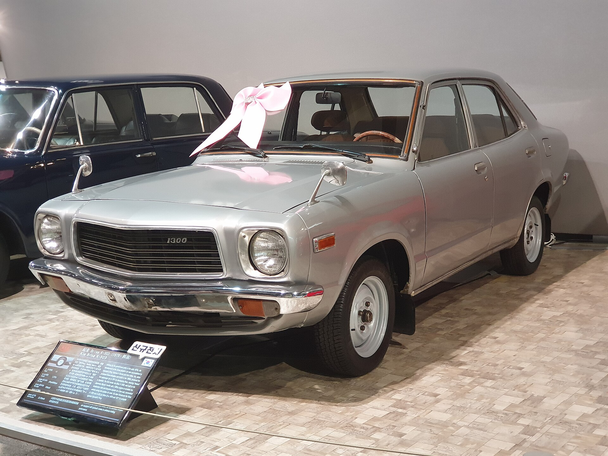

המייסד ושנות חיים
במקרה של קיה, בניגוד לטויוטה, הונדה או וולוו, אין דמות מייסד אחת שמקובלת בכל המקורות ההיסטוריים כדמות אישית מרכזית עם שנות חיים מוסכמות. החברה נוסדה בשנת 1944 בשם Kyungsung Precision Industry. לכן נכון יותר להציג את “המייסד” כגוף תעשייתי מוקדם ולא כאדם יחיד.
הדבר עצמו מעניין מבחינה היסטורית: קיה לא נולדה ממיתוס של ממציא יחיד, אלא מתוך התפתחות תעשייתית קוריאנית. היא משקפת צמיחה של תעשייה מקומית דרך מתכת, רכיבים, אופניים, כלי רכב קלים ולבסוף מכוניות.
מקור השם Kia
השם Kia פורש בשיווק החברה כקשור ליציאה או עלייה מאסיה אל העולם. גם אם הפרשנות הלשונית המדויקת מורכבת יותר, מבחינה מותגית הוא מבטא חזון: חברה אסייתית שנועדה לפרוץ לשוק הבינלאומי.
מה היה לפני המכונית?
ראשיתה של קיה הייתה בייצור חלקי מתכת וצינורות פלדה. בהמשך ייצרה אופניים, ובכך תרמה לתחבורה בסיסית במדינה שעדיין לא הייתה ממונעת בהיקף רחב. המעבר הזה — ממתכת לאופניים ומאופניים לכלי רכב — דומה למעבר שעשו יצרנים אחרים בעולם בראשית תולדות הרכב.
הדגמים המכוננים
קיה החלה לייצר כלי רכב דו־גלגליים ותלת־גלגליים, ולאחר מכן נכנסה למכוניות באמצעות שיתופי פעולה ורישוי טכנולוגי. Kia Brisa נחשבת לדגם חשוב בהיסטוריה המוקדמת שלה, מפני שהיא סימנה מעבר ממשי לייצור מכוניות נוסעים.

המשבר שהפך לנקודת מפנה
המשבר הפיננסי באסיה בסוף שנות ה־90 פגע בקיה קשות. השתלבותה בקבוצת Hyundai Motor Group הייתה נקודת מפנה: החברה קיבלה בסיס הנדסי, פיננסי וניהולי רחב יותר, והחלה תהליך ארוך של שיפור איכות, עיצוב ותדמית.
עיצוב וזהות מודרנית
במאה ה־21 קיה עברה ממעמד של מותג חסכוני בעיקר למותג בעל עיצוב מובחן. מכוניות כמו Sportage, Sorento ו־Telluride יצרו נוכחות חזקה יותר בשוק, ואילו EV6 ו־EV9 מסמנות את המעבר למכוניות חשמליות שאינן רק “חסכוניות”, אלא גם טכנולוגיות ויוקרתיות יותר.
מורשת
המורשת של קיה היא שינוי זהות. היא מראה כיצד מותג יכול לצאת ממשבר עמוק ולבנות לעצמו שפה חדשה. בניגוד לחברות ותיקות שמציגות מורשת של מייסד מפורסם, קיה מציגה מורשת של הסתגלות, למידה ותחייה מחדש.